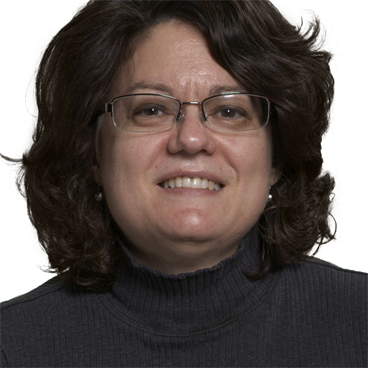
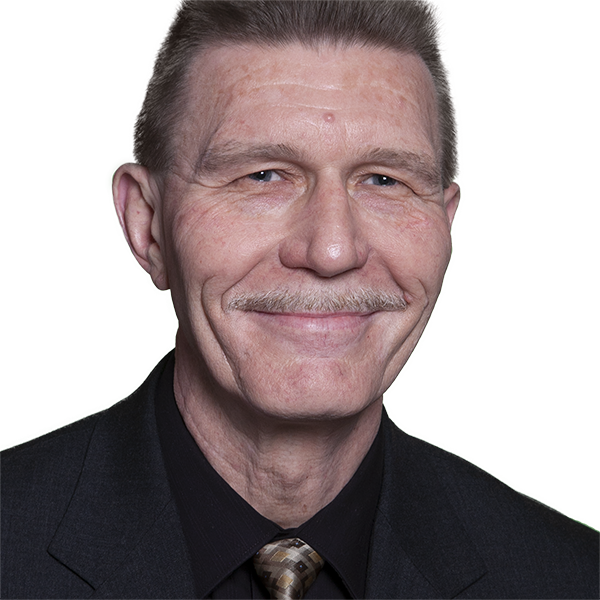
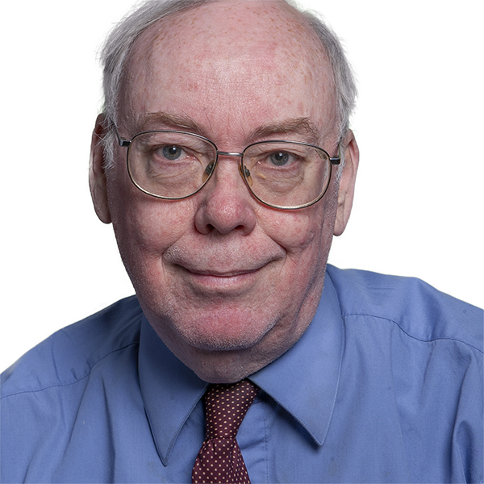
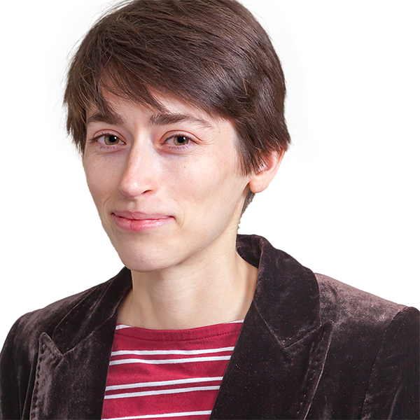
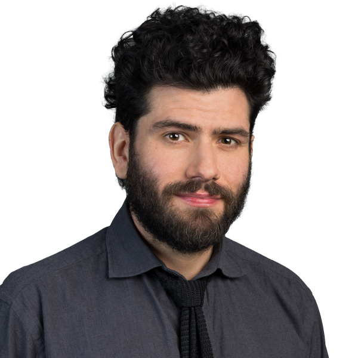

Directory
Humanities & Social Sciences
Andres Crespo SolisUniversity Lecturer Britt HolbrookAssociate ProfessorPhilosophyScience and Technology PolicySTSinterdisciplinarityTheresa HuntSenior University LecturerGender StudiesSocial Movement ResearchGlobal StudiesCarol JohnsonAssociate ProfessorFormerlythe history of technical communicationeducational assessmentindustrial archaeologyNeel KhichiSenior University Lecturer
Britt HolbrookAssociate ProfessorPhilosophyScience and Technology PolicySTSinterdisciplinarityTheresa HuntSenior University LecturerGender StudiesSocial Movement ResearchGlobal StudiesCarol JohnsonAssociate ProfessorFormerlythe history of technical communicationeducational assessmentindustrial archaeologyNeel KhichiSenior University Lecturer Burt KimmelmanDistinguished ProfessorBurt Kimmelman is a poetliterary scholar and criticeditorpersonal essayistPhilip KlobucarAssociate ProfessorInteractive Storytellingdigital mediaAssessmentSound Technologies
Burt KimmelmanDistinguished ProfessorBurt Kimmelman is a poetliterary scholar and criticeditorpersonal essayistPhilip KlobucarAssociate ProfessorInteractive Storytellingdigital mediaAssessmentSound Technologies Michael LaudenbachAssistant Professorrhetoriccompositioncorpus linguisticswriting pedagogyLaura Devorah DickermanUniversity LecturerJames LipumaSenior University LecturerIn his role as directorDrSTEM EducationDigital Learning and Communciation
Michael LaudenbachAssistant Professorrhetoriccompositioncorpus linguisticswriting pedagogyLaura Devorah DickermanUniversity LecturerJames LipumaSenior University LecturerIn his role as directorDrSTEM EducationDigital Learning and Communciation

Miriam AscarelliSenior University Lecturer
Charles BrooksSenior University LecturerAndrew BurnsideUniversity LecturerDrew CiccoloUniversity LecturerAreas of research specialization include fiction and narrativespeculative fictionthe fantastic“magical realism” (contentious term)Maurie CohenProfessorSustainable consumptionsustainable mobilitysocio-technical transition managementnew economicsJonathan CurleySenior University LecturerContemporary American poetry and politicsaestheticspoliticscultureJohanna DeaneUniversity LecturerNarrative designhistorical worldbuilding through applied paleolinguisticsarcheogamingGareth EdelUniversity LecturerEmily EdwardsUniversity LecturerJohn EganSenior University LecturerNowGreek lit
John EscheUniversity LecturerDaniel EstradaSenior University LecturerPhilosophy of TechnologyPhilosophy of ScienceArtificial IntelligenceComplex systemsChristopher FunkhouserProfessorGrisele Gonzalez-LedezmaUniversity LecturerRisa GorelickSenior University LecturerLabor-Relations in Higher EducationRhetoric of Food WritingService-learning Connections to WritingBridging the Humanities-STEM CommunitiesAbriana GreshamAssistant Professorintimate partner violenceclose relationshipsaffective sciencepsychophysiologyCrystal HamaiUniversity LecturerBritt HolbrookAssociate ProfessorPhilosophyScience and Technology PolicySTSinterdisciplinarityTheresa HuntSenior University LecturerGender StudiesSocial Movement ResearchGlobal StudiesCarol JohnsonAssociate ProfessorFormerlythe history of technical communicationeducational assessmentindustrial archaeologyNeel KhichiSenior University LecturerBurt KimmelmanDistinguished ProfessorBurt Kimmelman is a poetliterary scholar and criticeditorpersonal essayistPhilip KlobucarAssociate ProfessorInteractive Storytellingdigital mediaAssessmentSound TechnologiesMichael LaudenbachAssistant Professorrhetoriccompositioncorpus linguisticswriting pedagogyLaura Devorah DickermanUniversity LecturerJames LipumaSenior University LecturerIn his role as directorDrSTEM EducationDigital Learning and Communciation
Calista McRaeAssociate ProfessorpoetryAmerican literaturecomedyanimalsDavid RothenbergDistinguished Professorinterspecies communicationmusic and technologyenvironmental philosophyhuman computer musical interfacesRebekah RutkoffAssociate Professorexperimental film and mediapsychoanalysiscreative writing
Adam SeeSenior University LecturerYelda SemizerAssistant ProfessorCatherine SiemannSenior University LecturerWriting Center studies19th century literature and culturespeculative fictionlaw & literatureJake SlovisSenior University LecturerEugene SnyderAssistant ProfessorVoice InteractionConversational agents and voice assistantsAI-human collaborationModalityNancy Steffen-FluhrAssociate ProfessorGender and technology studies--including gender issues in US film and televisioncollaborative processessocial network analysisYao SunAssistant ProfessorProfessors
Burt KimmelmanDistinguished ProfessorBurt Kimmelman is a poetliterary scholar and criticeditorpersonal essayistDavid RothenbergDistinguished Professorinterspecies communicationmusic and technologyenvironmental philosophyhuman computer musical interfacesChristopher FunkhouserProfessorAssociate Professors
Britt HolbrookAssociate ProfessorPhilosophyScience and Technology PolicySTSinterdisciplinarityCarol JohnsonAssociate ProfessorFormerlythe history of technical communicationeducational assessmentindustrial archaeologyPhilip KlobucarAssociate ProfessorInteractive Storytellingdigital mediaAssessmentSound TechnologiesCalista McRaeAssociate ProfessorpoetryAmerican literaturecomedyanimalsRebekah RutkoffAssociate Professorexperimental film and mediapsychoanalysiscreative writingNancy Steffen-FluhrAssociate ProfessorGender and technology studies--including gender issues in US film and televisioncollaborative processessocial network analysisAssistant Professors
Abriana GreshamAssistant Professorintimate partner violenceclose relationshipsaffective sciencepsychophysiologyMichael LaudenbachAssistant Professorrhetoriccompositioncorpus linguisticswriting pedagogyYelda SemizerAssistant ProfessorEugene SnyderAssistant ProfessorVoice InteractionConversational agents and voice assistantsAI-human collaborationModalityYao SunAssistant ProfessorSenior Lecturers
Miriam AscarelliSenior University LecturerCharles BrooksSenior University LecturerJonathan CurleySenior University LecturerContemporary American poetry and politicsaestheticspoliticscultureJohn EganSenior University LecturerNowGreek litDaniel EstradaSenior University LecturerPhilosophy of TechnologyPhilosophy of ScienceArtificial IntelligenceComplex systemsRisa GorelickSenior University LecturerLabor-Relations in Higher EducationRhetoric of Food WritingService-learning Connections to WritingBridging the Humanities-STEM CommunitiesTheresa HuntSenior University LecturerGender StudiesSocial Movement ResearchGlobal StudiesNeel KhichiSenior University LecturerJames LipumaSenior University LecturerIn his role as directorDrSTEM EducationDigital Learning and CommunciationAdam SeeSenior University LecturerCatherine SiemannSenior University LecturerWriting Center studies19th century literature and culturespeculative fictionlaw & literatureJake SlovisSenior University LecturerUniversity Lecturers
Andres Crespo SolisUniversity LecturerAndrew BurnsideUniversity LecturerDrew CiccoloUniversity LecturerAreas of research specialization include fiction and narrativespeculative fictionthe fantastic“magical realism” (contentious term)Johanna DeaneUniversity LecturerNarrative designhistorical worldbuilding through applied paleolinguisticsarcheogamingGareth EdelUniversity LecturerEmily EdwardsUniversity LecturerJohn EscheUniversity LecturerGrisele Gonzalez-LedezmaUniversity LecturerCrystal HamaiUniversity LecturerLaura Devorah DickermanUniversity LecturerNo faculty match “”.